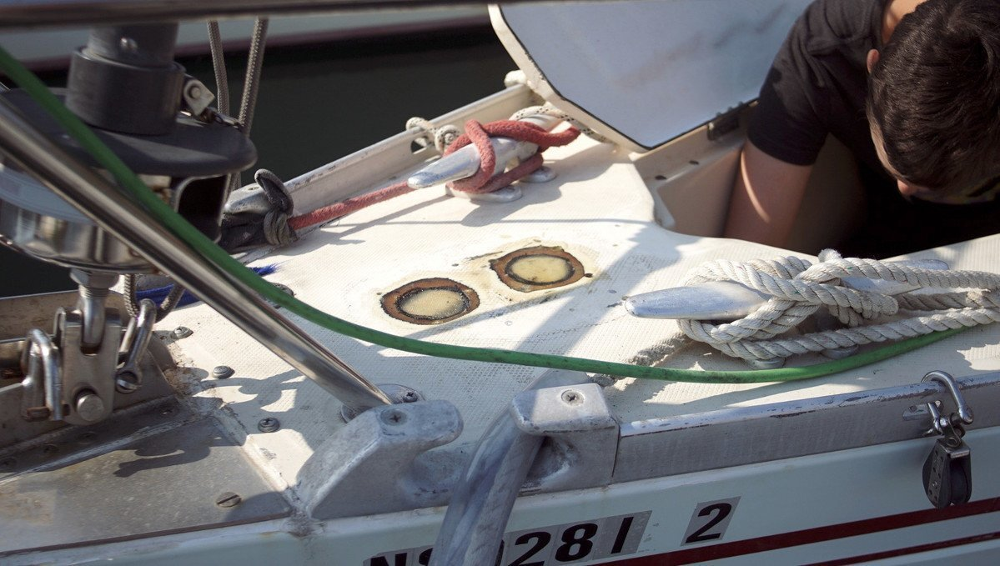

windlass removal
20.05.20
Mie, Japan
Our windlass broke while in fiji. The motor died, and we did not have the means to replace it. It didn't matter though, because up to this point we always hoisted the anchor back up by hand. Rare were the times that we relied on the windlass, and we now realize that perhaps this was what caused its early death. When mechanical parts fall into disuse, they get angry, then jealous, and eventually they become vengeful and start breaking apart.
We carried our wounded windlass all the way to Japan, and removed it from the deck while in Minamiise, Mie JP.
The windlass was very difficult to remove, as are most things on a boat. Looking at instructions online on how to disassemble it only served to worsen our opinions of Lewmar products. Let's just say that it wasn't entirely helpful. We always pick the less brutish route first, but it always ends in violence. In the end, we had to beat it with a hammer, and cut it out of the deck. The bolts below were jammed, the motor was seized.
Our windlass sat on a wooden pad, which we cut out using wood scissors and a hammer. Once that was out, we lifted the deck half of the windlass, and went to work cutting the shaft in two using a grinder. Brutish. It took many days. Even when the shaft was cut, the bottom part was stubborn and refused to budge. We begged it to let go of our deck, but it hugged the surface, indifferent to our plea. Again, we had to threaten it with more violence. Eventually, defeated, its claws retracted and we were able to take it off. Indeed, the whole thing was seized, the metal was crusty and grey, and some of the more delicate parts exploded into a fine powder at our fingertips.
At this point, we had no plans to install another powered windlass, ever, so we started removing all of the heavy wiring running the length of the boat. We also removed panels for turning on the windlass which had been installed and wired all over the boat (3 in all). The power switch was inside the cabin, and toggles for hoisting the anchor, or lowering it. It appeared that we would have many holes to close. It is amazing that boats can manage to remain dry inside with so many holes.
On the bow, we had two ~5cm holes to fill, with two more: one in the anchor locker, and another in the cockpit.
We glued rigid plastic boards covered with wax paper from inside. Then, we sanded around the hole so that the epoxy and fibreglass sheeting would have a rough surface to adhere to. After cleaning up the mess with acetone, we began filling the hole. We used fibreglass sheeting and epoxy for the vertical faces. We covered the holes with paint that matched our gel-coat color well enough.
Chain stopper
We added a Maxwell chain stopper to our bow, a contraption that would help us lower and raise the anchor safely. The chain stopper has a groove at its base, and a little flap with a gap overtop. When the flap is down it bites into the links and locks the chain in place. This is useful when hoisting the anchor, so that you don't have to keep holding it. It is also a safety measure, so that if your anchor falls off the bow the chain won't get to follow.
We had a piece of G-10(dense fibreglass) left over from another project and used it to build a base for the chain stopper. G-10 is an amazing material, but very difficult and annoying to cut. It explodes into a fine, stinky, yellow powder. We cut it while in the boatyard, and the marina workers all gathered round to watch the yellow plume rising from our work area. This stuff isn't good to breathe, they quickly backed off.
We had just closed two large holes in our deck, but now we would have to make 4 more. At least, these holes would be much smaller. We cut out a template and drilled out the holes in the deck, two sizes bigger than the hole required for the bolt. The reason we did that was to avoid compressing the deck core. We gouged the core around the hole as best we could so that the epoxy has more room to expand and to gain a firm grip, and taped up the bottom and filled it with epoxy, careful to remove all air bubbles.
We filled the holes with epoxy and drilled into them again using the correct size so we could pass our four long bolts. We added loc-tite to the ends of the bolts that fit into the chain stopper, and inserted it into the four holes. One person was on deck while the other was below, screwing the lock nuts on. We don't have great access to the ceiling in the bow because it is hidden behind the anchor locker, but we managed it anyway, doing some of the work in the blind, feeling with the tips of our fingers.
Voila, we now have a chain stopper on deck! We added sealant under the G-10 and painted over it. We also added a metal corner on the forward edge, to protect the base from chafe from the chain.